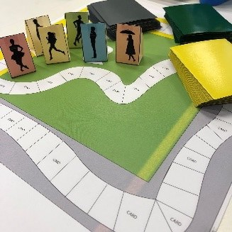
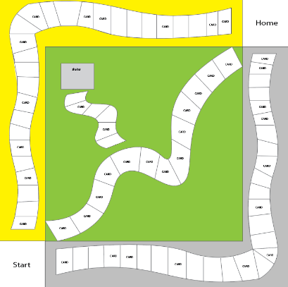

The Long Walk Home
For the Global Game Jam 2019 we created the board game The Long Walk Home. The theme of the jam was What home means to you, and as the best journeys always take you home, we decided that would be the theme of our game.
The premise of the game is you travel along one of the three paths, and can have ‘random encounters’ throughout the journey. These are selected randomly from the cards, each bespoke to its own area. It is a competition to not only arrive at the home space first, but to arrive with the largest sum of money.
More information on the game can be found at : https://globalgamejam.org/2019/games/long-walk-home
We hope you enjoy it!
 Creators
Lauren Scott
Ciaran Halliburton